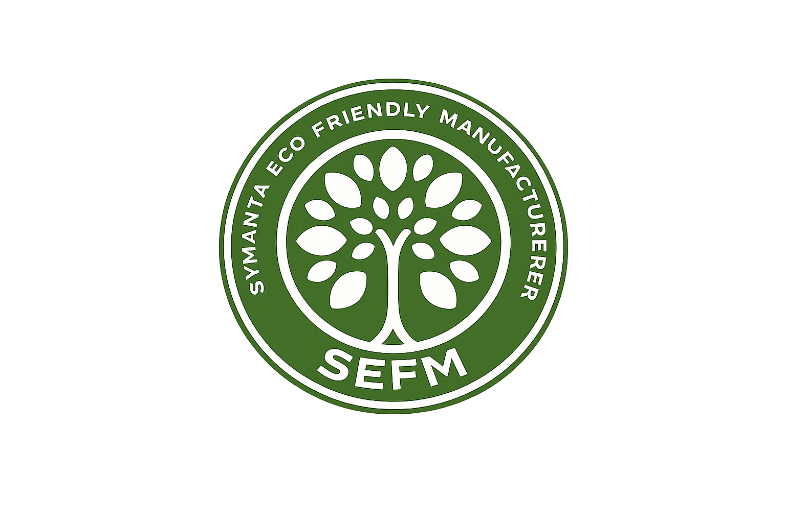

Disposable Paper Products Manufacturer

Premium eco-friendly paper plates, cups, and disposable products designed for modern food businesses. They are ideal for individual servings at all kinds of parties, functions, picnics, marriages, chaat, tea & food joints, etc. Non-toxic in nature, the shapes and surface designs on these paper cups are attractive and present an inviting look. These paper cups can also be custom printed with an outlet's logo, brand punchline, or advertising message. Available in a wide variety of designs, textures, colours and sizes, disposable paper cups and plates are gorgeous, stylish, and eloquent. Adding a premium aura wherever used, these cups are made with utmost care to detail and are a unique addition to any table setting. Hence, the future of the proposed unit for manufacturing paper cups is very vibrant and will be a gesture towards supporting the usage of eco-friendly products.
Sizes: 7" 8" 10" 12" 14"
We manufacture high-quality eco-friendly disposable products focused on sustainability, hygiene, and affordability.We will begin as a small-scale manufacturing firm that will handle the production and distribution of paper cups and plates. After this, we are also planning to manufacture of other Disposable products such as paper cups, paper bags, tissue paper, disposable spoon and forks etc. With this company, we are also aiming to create a company that not only deals with production and distribution but also manages the waste that is being generated by the product we create. We want to recycle all the paper plates and cups that are being generated from our company and, if possible, transform the products into exact of these cups and plates. Annie Leonard says, “There is no such thing as ‘away.’ When we throw anything away, it must go somewhere,” and we want that somewhere to be our company. VISION: To provide each customer with the satisfaction of making a positive impact on society and the environment through purchases, we aim to establish a trademark business of recycling everything we produce. MISSION: The objective of our company is to produce an environmentally friendly product that is free of pollutants and easily recyclable.
Owner: Tapash Kumar Thakuria
Phone: +91 7002269726
Location: Guwahati, Assam, India
Trade License: View
Udyam Certificate: View
NGO Agreement: View